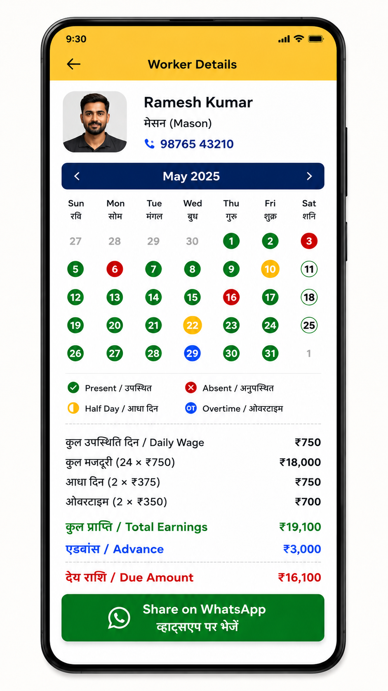
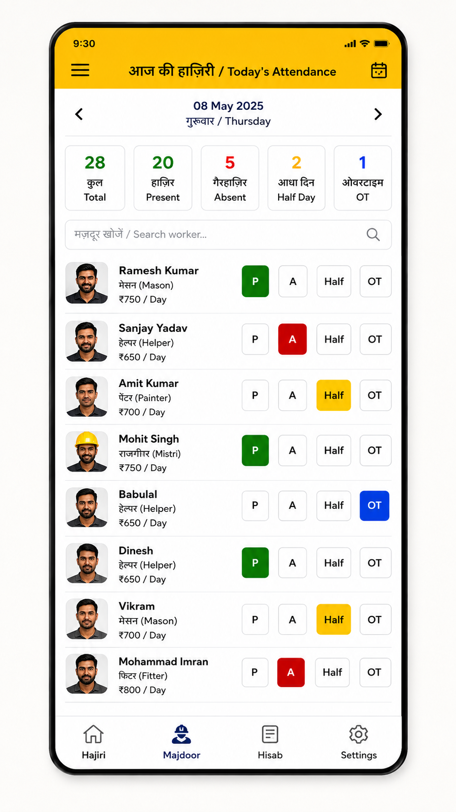
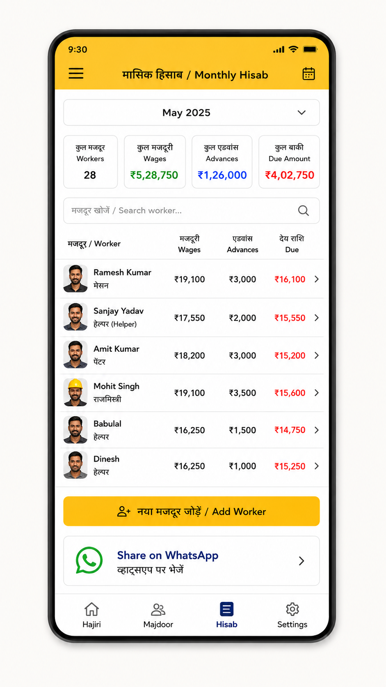
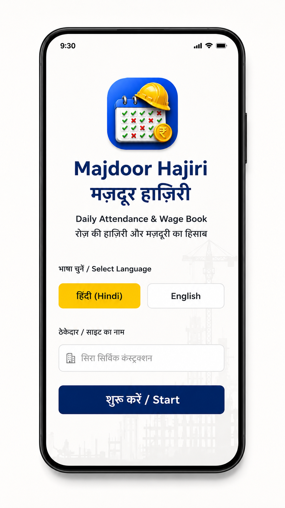
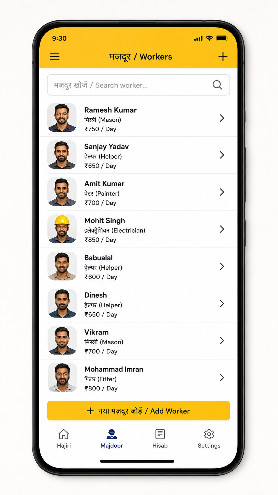
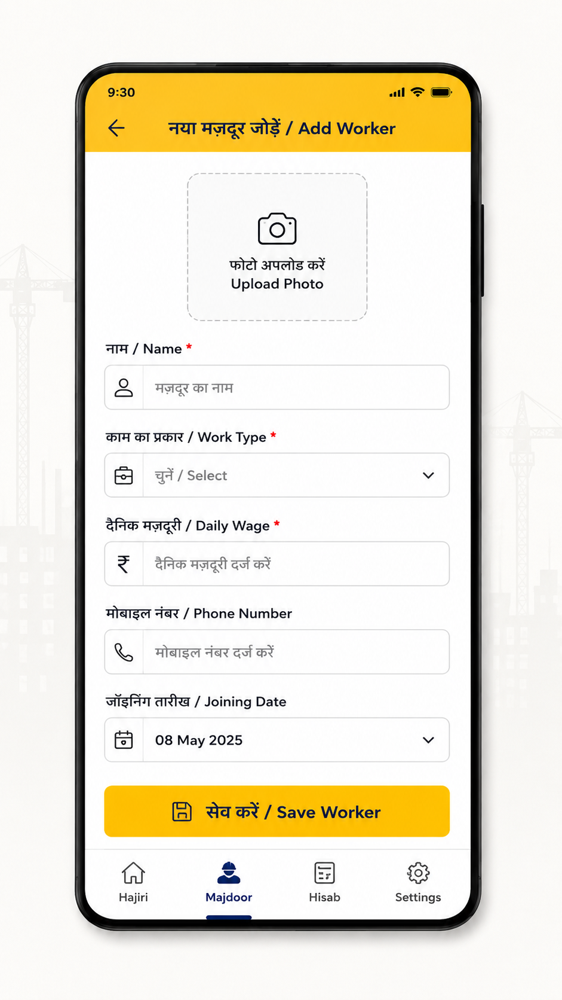
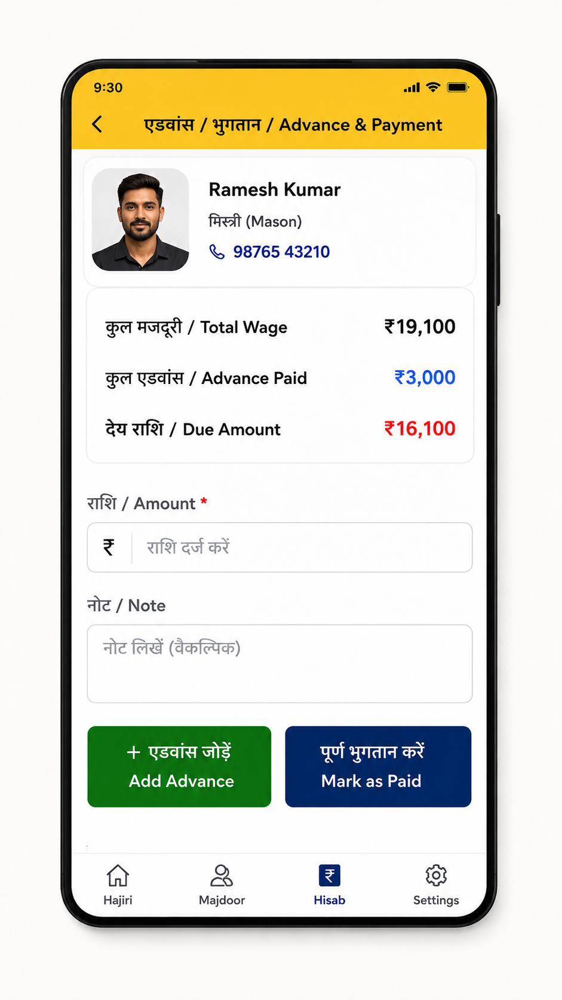
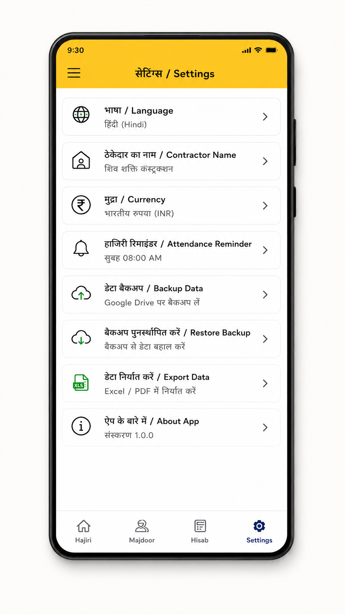

रोज़ की हाज़िरी
Present, Absent, Half Day और Overtime को जल्दी मार्क करें।
रोज़ की हाज़िरी, मजदूरी, एडवांस, पेमेंट और महीने का हिसाब — ठेकेदार, बिल्डर, साइट इंजीनियर, सुपरवाइज़र और हेल्पर टीम के लिए एक आसान ऐप। Hindi + English.



कागज़, अलग-अलग नोटबुक और बार-बार की गणना कम करके मज़दूरों का रिकॉर्ड एक जगह रखें।
Present, Absent, Half Day और Overtime को जल्दी मार्क करें।
हर worker की daily wage और salary record अलग रखें।
Advance, paid amount और बाकी due का रिकॉर्ड साफ़ रखें।
अपनी सुविधा के अनुसार हिंदी या English में ऐप इस्तेमाल करें।
नाम, काम, मजदूरी, फोन और joining details के साथ worker जोड़ें।
हाज़िरी और हिसाब का रिकॉर्ड व्यवस्थित रखें और जरूरत पर शेयर करें।
छोटी साइट से लेकर रोज़ कई मज़दूर संभालने वाली टीम तक, ऐप का flow daily labour work को ध्यान में रखकर बनाया गया है।
हाज़िरी, मजदूरी और भुगतान का रिकॉर्ड एक जगह।
साइट workers और attendance records को आसानी से देखें।
रोज़ की worker presence और labour record व्यवस्थित रखें।
हाज़िरी और worker details का भरोसेमंद रिकॉर्ड रखें।
हेल्पर attendance, मजदूरी और payment हिसाब संभालें।
हाज़िरी, मजदूरी, एडवांस और due amount का साफ़ रिकॉर्ड।
Construction site पर management से लेकर skilled labour और helper तक अलग-अलग roles होते हैं। Majdoor Hajiri का focus हर worker की attendance, wage और payment history को साफ़ तरीके से रखना है।
ठेकेदार labour arrange करता है, काम coordinate करता है और अक्सर रोज़ की हाज़िरी, मजदूरी rate, advance, payment और बाकी हिसाब संभालता है।
Builder project execution, labour deployment, subcontractor teams, progress और construction cost को review करता है।
Civil engineer drawing, quantity, quality और site progress पर काम करता है। Labour attendance का सही record workforce planning और daily site coordination में मदद करता है।
Supervisor site पर workers को coordinate करता है और daily presence, work type, Half Day, Overtime और team allocation check कर सकता है।
Mason brickwork, blockwork, plaster और masonry work करता है। Site arrangement के अनुसार उसकी attendance daily wage या monthly basis पर हो सकती है।
Carpenter formwork, shuttering, door, furniture या joinery work कर सकता है। Worker-wise attendance से days worked और payment history review करना आसान होता है।
Fabricator और welder steel/metal work करते हैं। उनका daily rate, attendance, overtime, advance और due worker-wise record किया जा सकता है।
Helper और general labour material shifting, mixing, cleaning और दूसरे site tasks में support करते हैं। Simple hajiri record paper register की confusion कम करता है।
Payment आम तौर पर attendance और तय daily rate से जुड़ा होता है। Half Day और Overtime का rate आपके site rule और worker agreement के अनुसार होना चाहिए।
Basic example: payable attendance units × agreed daily rateMonthly worker की तय monthly salary होती है। Absent, paid/unpaid days और deduction company/site policy और applicable rules पर depend करते हैं।
Attendance record को final monthly settlement के आधार के रूप में रखेंमहीने के बीच worker advance ले सकता है। Attendance के साथ advance और payment entries रखने से remaining due समझना आसान होता है।
Clear record: earnings + payment entries + remaining dueजरूरी: Majdoor Hajiri attendance और wage records व्यवस्थित रखने में मदद करता है। Final salary, overtime rate, deductions, minimum wage और statutory obligations applicable agreement, company policy और local law के अनुसार verify करें।
हाज़िरी, मजदूर लिस्ट, मासिक हिसाब, एडवांस, पेमेंट और सेटिंग्स का साफ़ workflow देखें।





Majdoor Hajiri ठेकेदार, बिल्डर, civil site engineer, supervisor और छोटे business teams के लिए बनाया गया है जहाँ रोज़ मजदूर या helpers की attendance और payment record रखना जरूरी होता है।
Paper register, अलग notebooks या याद से हिसाब रखने की जगह, आप worker जोड़ सकते हैं, रोज़ हाज़िरी mark कर सकते हैं, monthly calendar देख सकते हैं, daily wage record रख सकते हैं और advance या due amount का हिसाब संभाल सकते हैं।
मिस्त्री, helper, painter, carpenter, mason, fabricator, contractor labour और अन्य daily-wage workers के लिए attendance और मजदूरी का साफ़ record रखना आसान बनाया गया है।
Civil engineering और construction material calculations के लिए CodeMicros का अलग app Civil All in One Calculator इस्तेमाल करें।
Android और iOS के लिए Majdoor Hajiri.